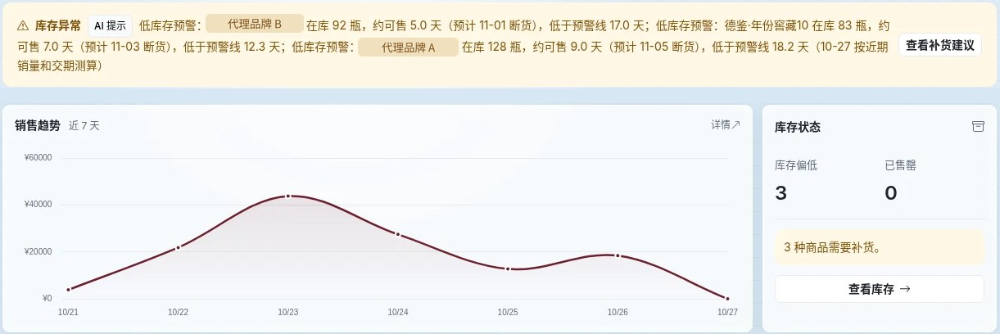
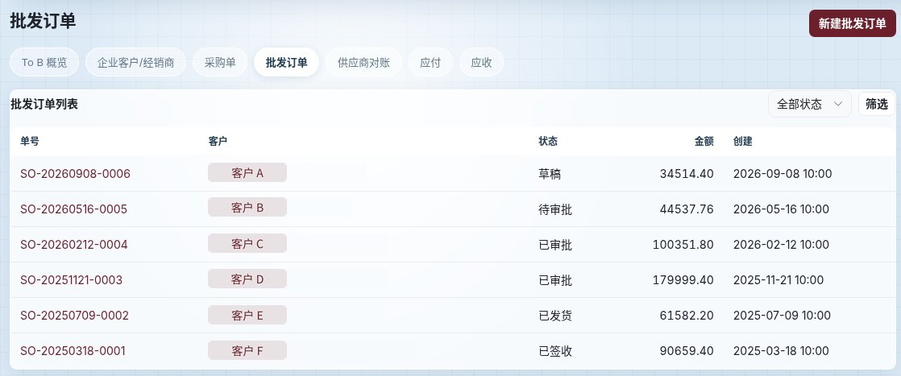
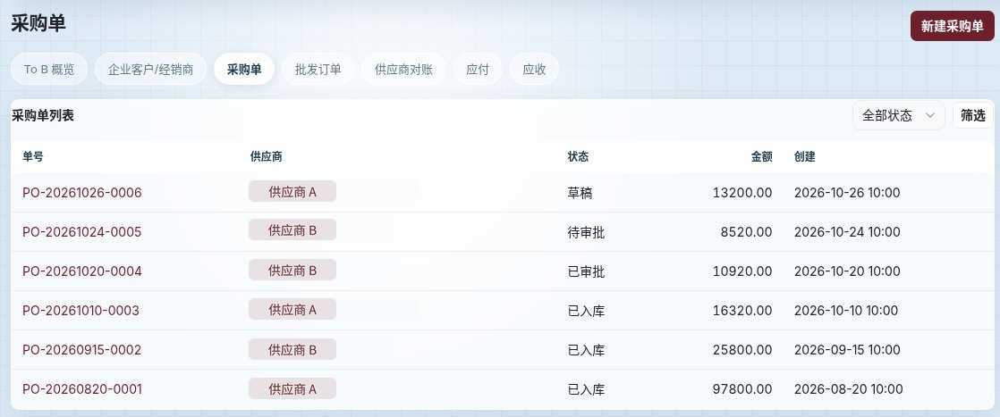
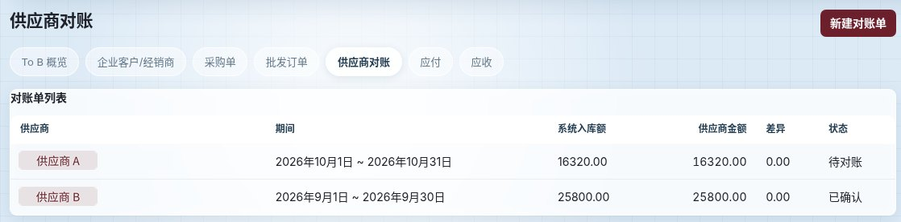
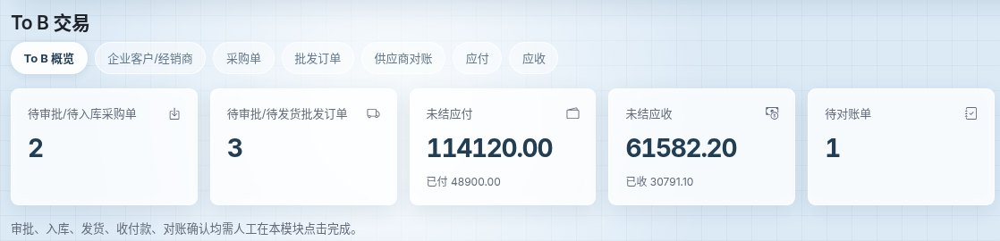

少压货
现有、在途、本次加起来，只备 60 天以内的量，钱不压在库房里。
FDE 定制开发 · 进销存 + AI 补货
为贵州德鉴酒业定制开发，并已交付上线。补什么、补几箱，系统依据德鉴的销售、库存与在途测算。
采购确认后，采购单草稿随即生成。
贵州德鉴酒业 · FDE 定制开发 · 已上线使用
低库存可卖天数不到交期加安全库存，提示补货
积压库存超过 120 天销量
滞销45 天没有动销
28天
补货按近 28 天销量测算销量基线
60天
补货后库存覆盖上限，不压货备货上限
6大模块
采购、库存、盘点、批发开单、供应商对账、补货测算开单到补货
1套系统
多家企业数据互不相见多家数据隔离





FDE 定制开发
01 · 运筹
筹策按德鉴自己的销售和采购单据测算，给出每样货的建议箱数，并写明是怎么算出来的。下不下单，由采购决定。
取近 28 天的移动平均，作为日均销量。只统计已完成的销售单。
用历史月度销量自动算出季节系数，修正出预测日需求。旺季前多备，淡季收着补。
目标库存 = 交期 + 7 天需求 + 安全库存，低于目标就给补货量。
按箱规和起订量取整，覆盖不超过 60 天，在预算和仓容内分配。
确认后生成 采购单草稿，再提交审核。系统只出建议，不会自动下单。
03 · 一条线走通
04 · 钱省在哪
现有、在途、本次加起来，只备 60 天以内的量，钱不压在库房里。
按供应商交期和安全库存提前算，货快卖完之前建议就出来了。
从销量到采购单草稿，一步到位，采购不用再拉表格。
每条建议写明依据，采购单要审核才生效；每张单据谁提交、谁审核、谁发货，都有记录。
05 · 真实界面
以下为筹策系统界面截图，代理品牌、客户和供应商名称已遮挡。
补货建议
| 商品 | 建议补货 | 依据 | |
|---|---|---|---|
| 代理品牌 A | 198 瓶33 箱 | 近 28 天日均销量 14.21 瓶，季节修正 ×0.82 → 预测日需求 11.60；交期 12 天（±3），安全库存 105，再订货点 244，目标库存 325。当前在库 128 + 在途 0 = 128，可售约 11 天。缺口 325 − 128 = 197 瓶，高于经济批量，按缺口补；按箱规 6、起订量 120 取整 → 198 瓶（33 箱），不超过 60 天备货上限。 | 生成采购草稿忽略 |
| 代理品牌 B | 420 瓶70 箱 | 近 28 天日均销量 18.36 瓶，季节修正 ×0.82 → 预测日需求 15.08；交期 12 天（±3），安全库存 118，再订货点 299，目标库存 405。当前在库 92 + 在途 0 = 92，可售约 6 天。缺口 405 − 92 = 313 瓶，低于经济批量，按经济批量补；按箱规 6、起订量 120 取整 → 420 瓶（70 箱），不超过 60 天备货上限。 | 生成采购草稿忽略 |
| 德鉴·年份窖藏10 | 330 瓶55 箱 | 近 28 天日均销量 11.79 瓶，季节修正 ×0.69 → 预测日需求 8.14；交期 7 天（±2），安全库存 65，再订货点 122，目标库存 179。当前在库 83 + 在途 0 = 83，可售约 10 天。缺口 179 − 83 = 96 瓶，低于经济批量，按经济批量补；按箱规 6、起订量 60 取整 → 330 瓶（55 箱），不超过 60 天备货上限。 | 生成采购草稿忽略 |
补货建议：每样货该补几箱、依据是什么，一屏看完。
库存提示：缺货、积压、滞销，打开首页就知道。
批发开单：客户、商品、数量，发货时库存自动扣减。
采购审核：草稿提交后走审核，通过才算数。
供应商对账：按期间核对入库金额，差额自动算出。
To B 概览：审批、入库、发货、收付款、供应商对账确认，都由人在系统里点击完成。
06 · 预警
筹策按近 28 天销量测算每样货，三类提示显示在首页。
低库存
可卖天数不到交期加安全库存时提前提示，配合补货建议一起看。
120天
库存超过 120 天销量，提示积压。
45天
45 天没有卖出，提示滞销。
07 · 账目
德鉴的采购、库存、批发开单与应收应付已在同一套系统内流转。补货建议直接依据这些单据测算，无需另行导表。
草稿到入库全程留痕，应付自动生成。
系统额与供应商额并排比对，差额自动算出。
库存、预警线、补货建议一页看清，出入库都有流水。
账实差异自动算出，审核后按实盘调库存。
发货自动扣库存、按账期生成应收，全程可追溯。
到期日自动算出，回款按笔登记，支持部分回款。
数据按企业隔离，六种角色各司其职。
商品、客户、期初库存、单据都能按模板导入。
08 · 六业
本系统按德鉴的商品、仓库与角色配置交付。同样的定制开发方式，适用于下列行业场景。
酱香白酒
季节系数算备货量，在途一并计入，不重复订货。
浓香白酒
低库存首页提示，先补快断的货。
茶叶
积压滞销自动提示，春季备货按系数修正。
农特产
补货不超过 60 天需求，45 天没动销自动提示。
快消
按箱规和起订量取整补货，应收按账期生成。
建材
信用额度和账期记在客户档案里，到期日自动算。
10 · 未来设想
酿见是我们的下一代产品方向：将需求预测、订货、定价与渠道投放纳入同一张经营沙盘，在决策之前完成推演。目前处于研发阶段。
销量、库存、在途、价格与投放统一测算。调整任一参数，全链结果随之更新，供决策前评估。
以德鉴 19 个季度的经营数据完成建模，六步决策链与沙盘测算均已成型，正在研发推进中。
11 · 问答
不会。系统只出建议，老板或采购确认后生成采购单草稿，再提交审核；不采纳时填写原因。
不用。季节系数由历史月度销量自动算出；也可以调整参数重新测算，对比结果。
商品、客户、期初库存、采购单、批发单都能按模板导入，上线不必从头录。
不会。每家企业的数据自动隔离；企业内部设老板、采购、销售、仓管、财务、审计六种角色。
当前版本不按仓库拆分库存，也不做批次、保质期和库龄管理。有这类需求，预约讲解时一起评估。
系统账号由筹策开通。先预约产品讲解，确认需求后为你的企业开通。